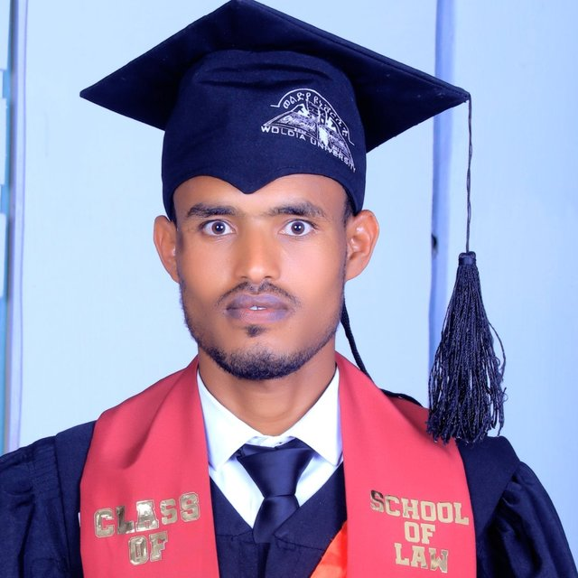

Bachelor of Laws graduate of Woldia University with a 3.84 CGPA. Former Head of Public Relations and Head of Discipline Affairs in the Students' Union, seeking legal roles, internships, fellowships and postgraduate study.

I am Yohans Alebachew Belay, a law graduate from the School of Law at Woldia University. I completed my Bachelor of Laws on June 25, 2026 with a cumulative GPA of 3.84 out of 4.00, passed the National Law Exit Examination with 82%, and scored 91 in my externship.
Alongside my studies I served as Head of Discipline Affairs and then Head of Public Relations in the Students' Union, sat on the Students' Discipline Committee, joined the board of the university's community radio station, and worked as an Anti-Corruption Ambassador. I also volunteered as a legal aid provider at the Habru Free Legal Aid Center.
I rank him among the top students of his cohort.Tesfaye Ayalew Teffera, Dean, School of Law, Woldia University
Roles held at Woldia University and in the community.
📚 Exit examination 82% | Externship 91 | Research project A+
Training and programs completed alongside the degree.
Three letters from Woldia University, written in June and July 2026.
I rank him among the top students of his cohort.
Placing him among the finest student leaders of our university community.
A rare combination of intellectual maturity, legal acumen, and an unyielding ethical compass.
Signed letters and original certificates are available on request.